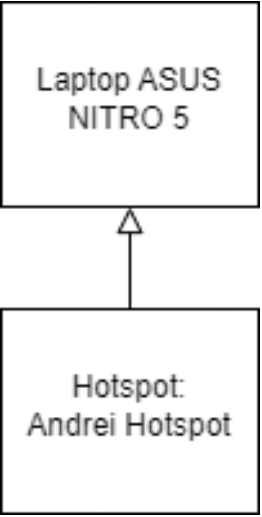

Zajzon Andrei
Structura retelei personale si accesul la internet

Caracteristicile conexiunii la retea
- Adresa MAC: 9C-2F-9D-7E-8E-F3
- Adresa IP: 192.168.66.103
- Debit la download: 39.55 Mbps
- Debit la upload: 8.78 Mbps
Utilizarea resurselor(slideshow)